Team USA
UCI BMX Racing World Championships appearances.
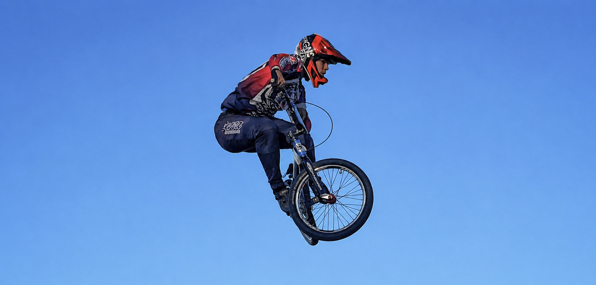
Keep scrolling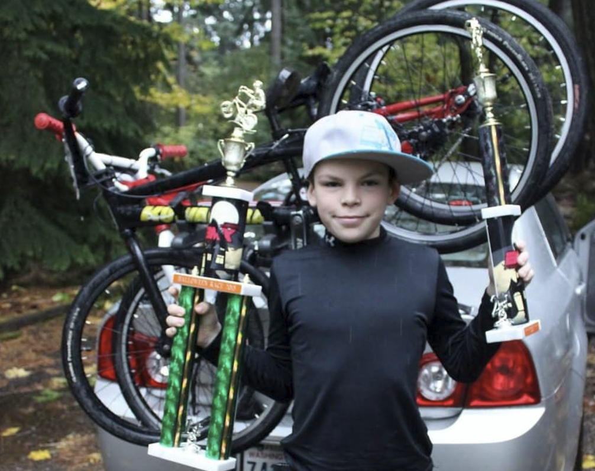
Who I am on a bike
I began racing BMX in January 2015, and it became my non-academic outlet ever since. The 30-45 second combination of physicality, strategy, and endorphins is exactly what fulfils my competitive drive. It didn't take long to reach the Expert division, where I soon began traveling the U.S. for the national series.
Beyond competition, BMX and mountain bike racing have blessed me with travel to 48/50 states, sponsorships, lifelong friends, and a fulfilling childhood. That is why I made it my mission as a USA BMX licensed coach to give motivated young athletes the opportunity to live the same dream I was able to.
As academic and career goals became more of a priority, I began to step back from national competition and enjoyed BMX and MTB for the community and recreation it provides. However, becoming President of the Georgia Tech Cycling Team has lit a 2nd spark for competition.
Competition highlights
UCI BMX Racing World Championships appearances.
Multiple state titles across years of BMX competition.
Regional Gold Cup championship titles.
Best national age-group ranking.
Gallery
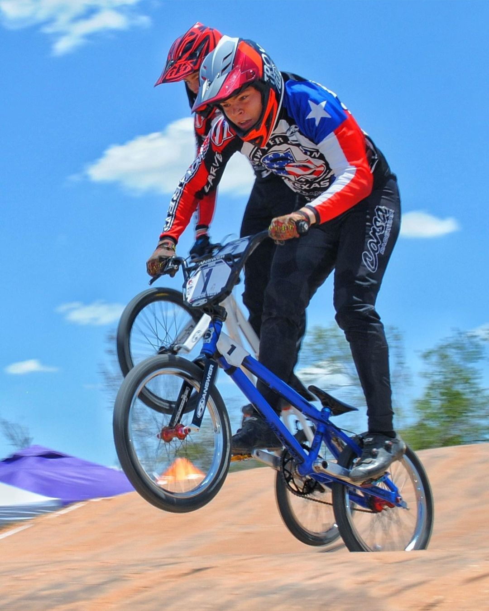
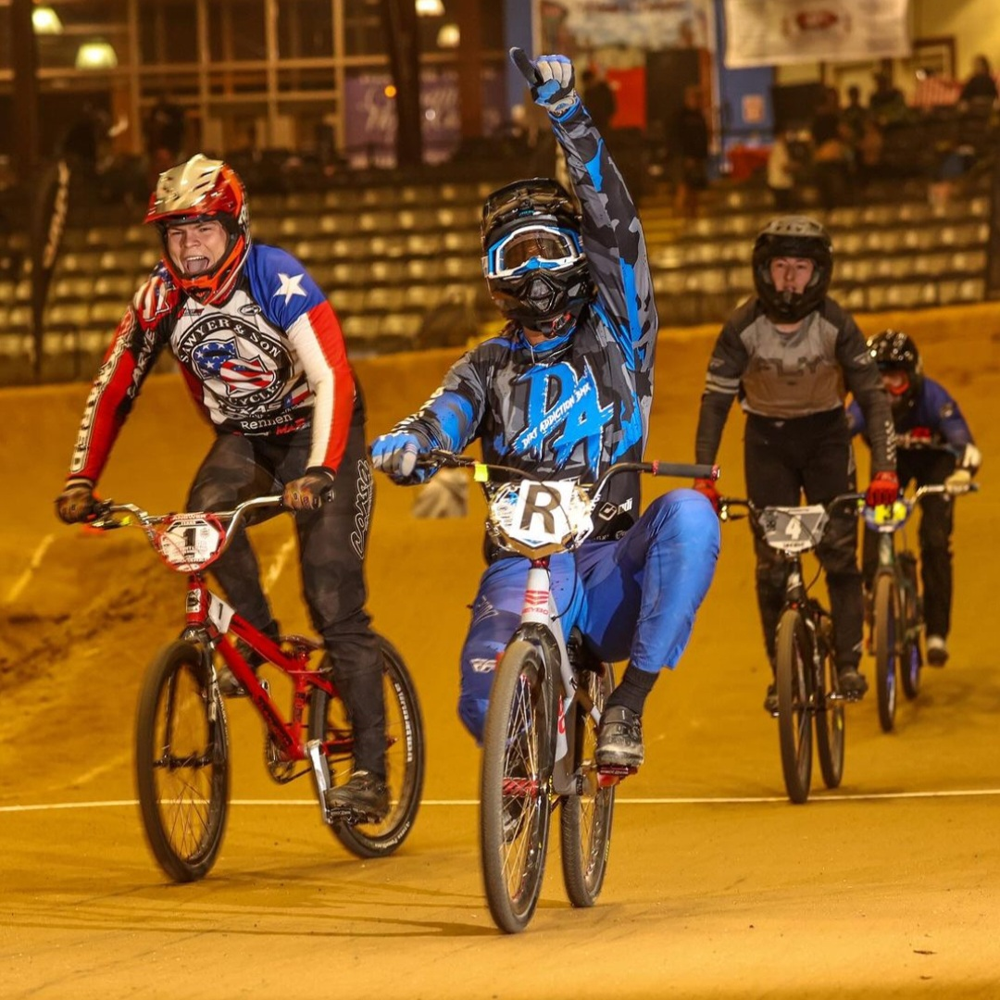
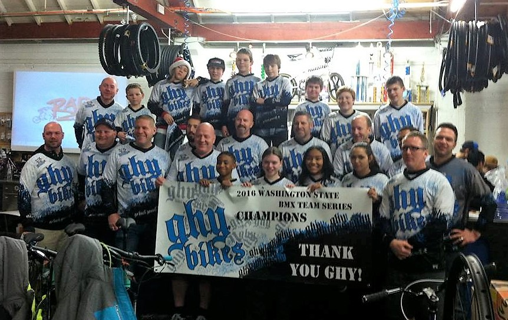
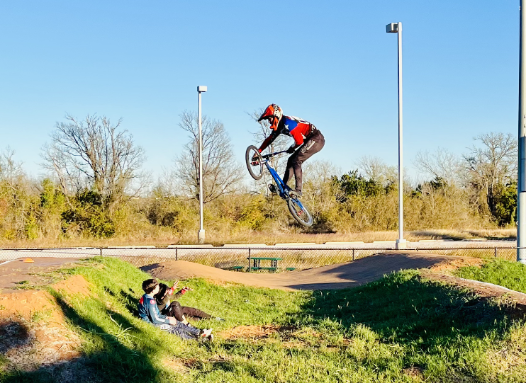
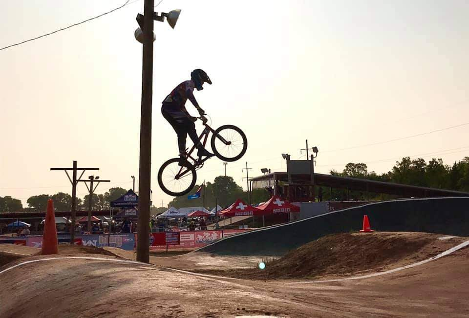
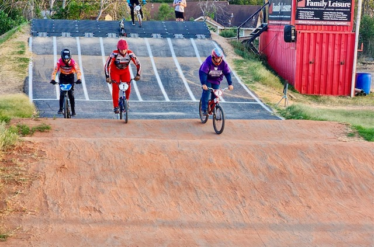
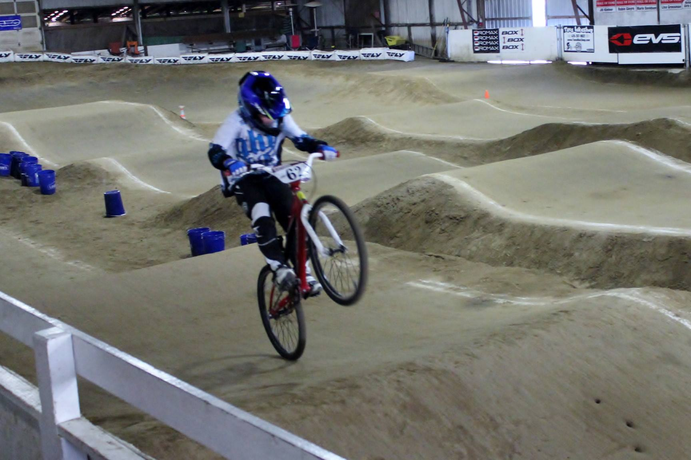
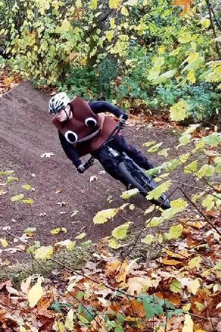
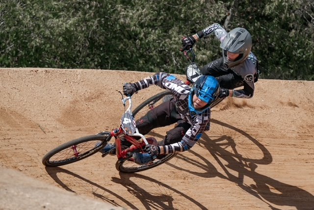
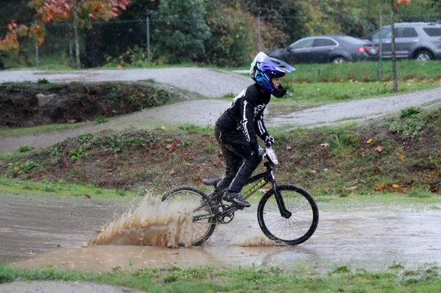
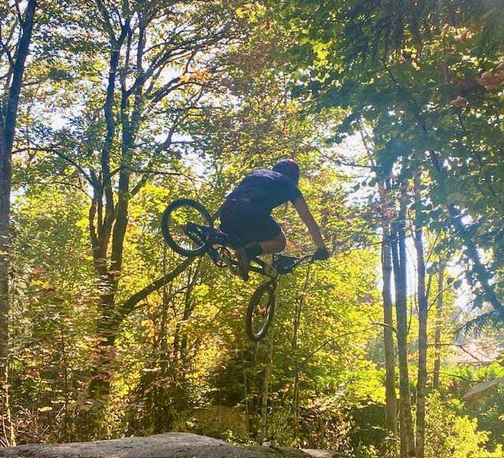
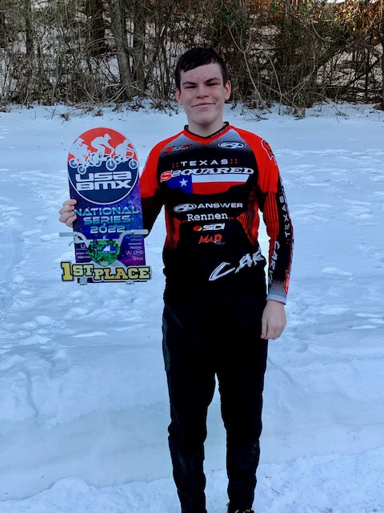
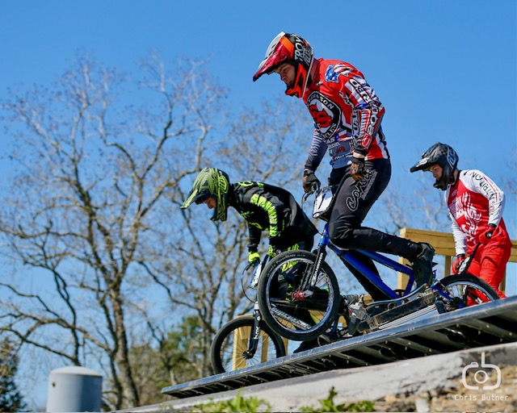
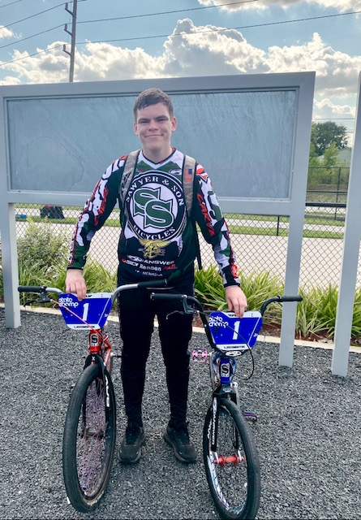
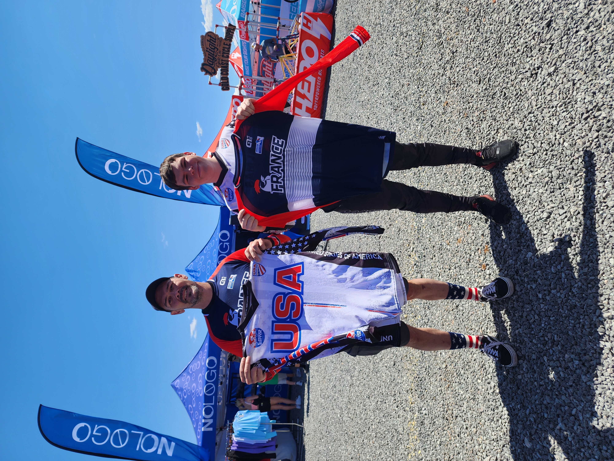
YouTube
When I first started racing the national series, I used GoPro footage to track my race weekends, trying my best to capture my greatest wins (and crashes). After a 9 year hiatus, I am finally making my return, documenting my attempt to get back to where I once was in BMX while sharing my journey in collegiate MTB racing. It is a creative project first and foremost, which is something I do out of the love of the sport and the process of documenting it.
Visit Aaron Kingslien BMX